In this blog post we will learn how to connect to a Raspberry PI via UART
(think serial terminal).
Before we begin we need to get a cheap USB <-> UART converter.
Make sure that the converter supports 3.3V voltage.
Most of the converters support other voltages e.g. 5V and you
can select which voltage you want by moving a jumper.
If your converter has such a jumper make sure that it is in 3.3V position.
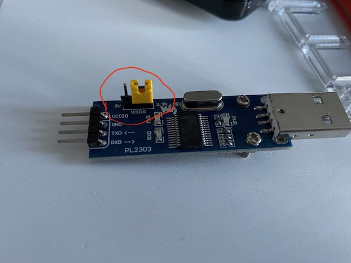
Although converters can have from four up to six pins, we will only need three: GND, RXD and TXD. We should connect RXD pin on the converter to TXD pin on the Raspberry PI and similarly TXD pin to the Raspberry’s RXD pin (crossover). We also need to connect the converter GND pin to Raspberry’s Ground pin. Do NOT connect VCC (or VCCIO) pin, we only need three wires. You can find the Raspberry PI pinout in the official docs: https://www.raspberrypi.org/documentation/usage/gpio/ - look at the five top left pins, the first two are +5V, then we have Ground, TXD and RXD pins. 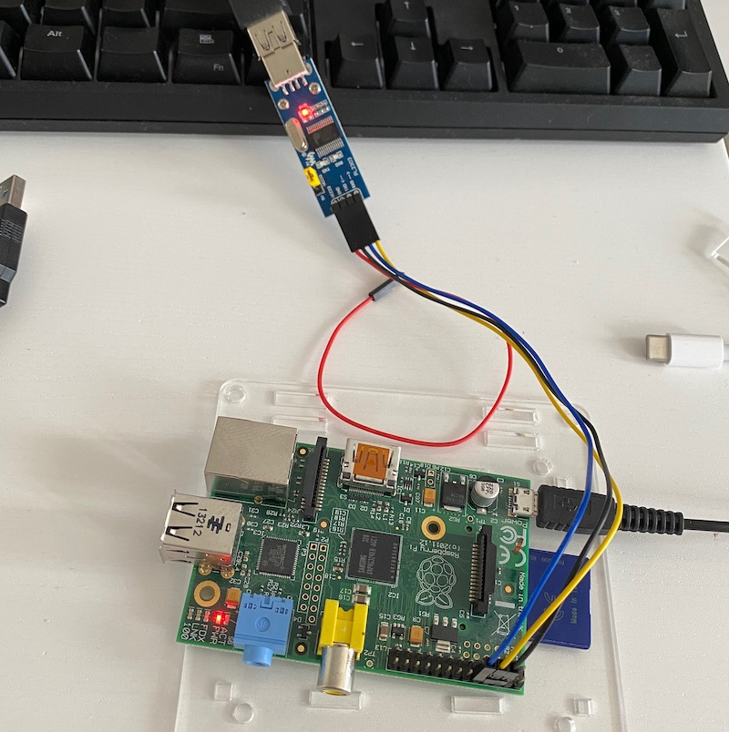
Next thing that we need to do is to enable UART support in Raspbian, which for
security reasons is disabled by default.
We need to change config.txt file on the /boot partition
on the Raspberry PI SD card. We need to add enable_uart=1 line
before [pi4] section (or at the end of the file if the section is not present).
(some lines skipped)
# Enable audio (loads snd_bcm2835)
dtparam=audio=on
# ADD THIS LINE HERE
enable_uart=1
[pi4]
# Enable DRM VC4 V3D driver on top of the dispmanx display stack
dtoverlay=vc4-fkms-v3d
max_framebuffers=2When we connect the converter to both Raspberry PI and the computer it should
be recognized by the system and a new device named ttyUSBn (where n is a number e.g. ttyUSB0)
should appear under /dev directory.
As always with all things hardware dmesg is your friend, so you can either dmesg | tail -n 100 or
dmesg | grep tty to find out what exactly device was created and if there where any problems.
On my system I saw the following messages:
$ dmesg | grep tty
[22562.037811] usb 3-10: cp210x converter now attached to ttyUSB0There are a lot of different programs on Linux that you can use to open a session.
We will concentrate on only two of them, putty which is a GUI tool and
screen which is a pure command line utility.
Let’s start with putty, first we need to configure it to read from /dev/ttyUSB0 device.
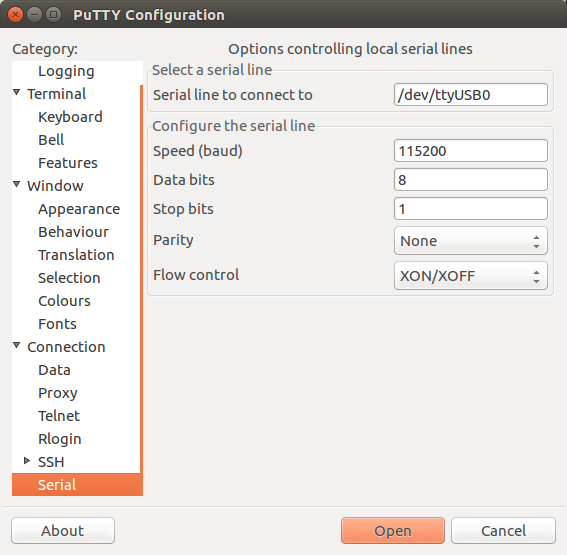
To avoid putting this info every time, when you want to connect we should save it as an profile (put a name and click Save button). 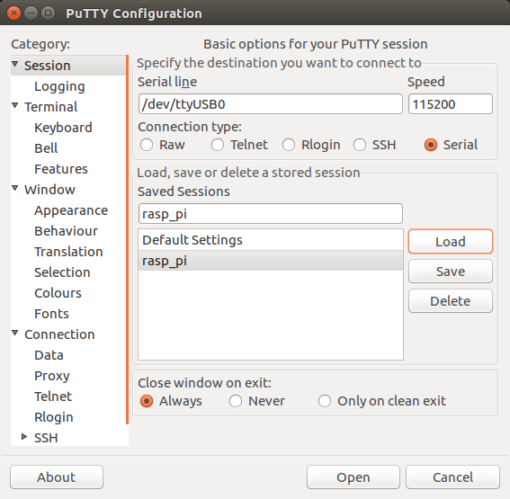
It is also worth checking other settings like the font, keyboard or the default terminal size: 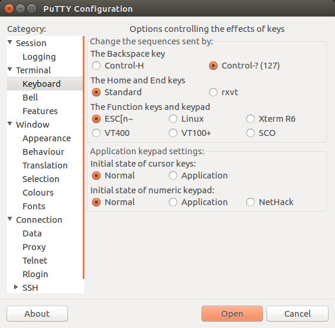 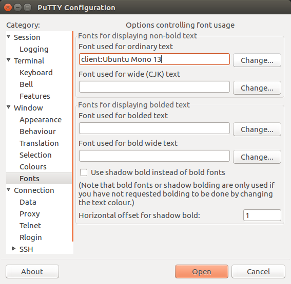
OK its time to test our configuration. Open putty and load previously saved profile, click Open and restart Raspberry PI. You should be able to see boot messages. Try pressing Enter if the console appears to hang. 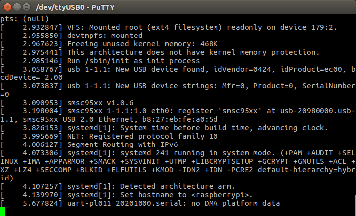
After we login it is easy to notice that there is no color support out of the box (at least on Raspbian Lite). This can be easily changed by selecting a different terminal type in the terminal session:
export TERM=xterm-256color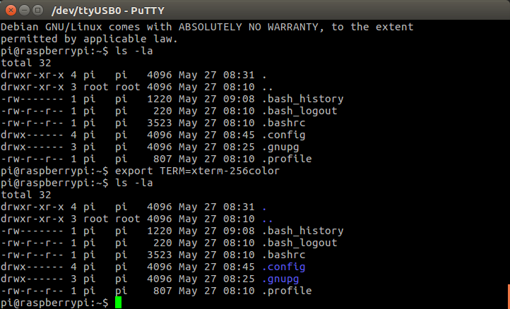
Another problem is that we are stuck with a fixed terminal size.
If your Raspberry PI has xterm package installed (not available on Lite version)
you can use resize command after you resize putty’s window.
Otherwise you may use this script created by @pkh
https://unix.stackexchange.com/a/283206:
resize() {
old=$(stty -g)
stty raw -echo min 0 time 5
printf '\0337\033[r\033[999;999H\033[6n\0338' > /dev/tty
IFS='[;R' read -r _ rows cols _ < /dev/tty
stty "$old"
stty cols "$cols" rows "$rows"
}Just copy and paste this code into the session and then enter resize (use Ctrl+Shift+Insert to paste in putty).
After the resize, commands like top or htop should occupy the entire terminal window.
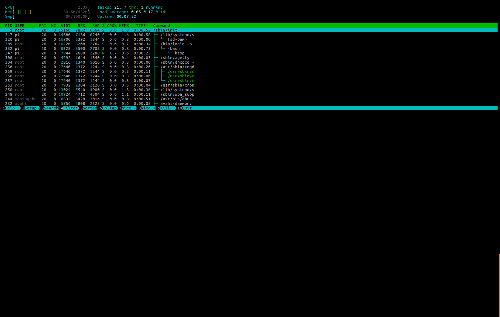
After resize becomes:
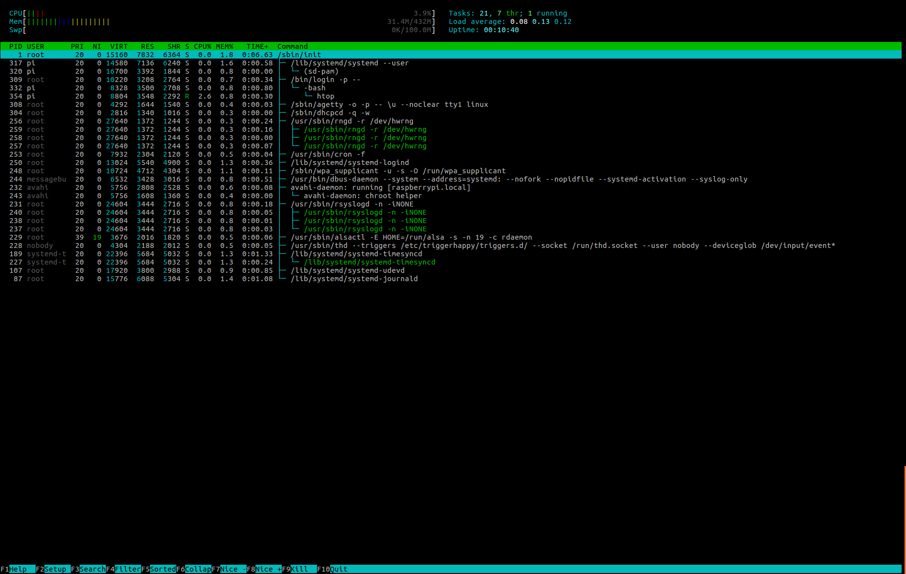
You may want to add both the resize function and TERM environment variable to ~/.profile
to avoid copy-pasting them every time.
If you don’t use GUI at all you may use screen. screen was designed to work with SSH sessions,
it helps you keep your programs running even after you end your SSH connection.
Most people these day use tmux as a modern alternative, unfortunately tmux does not
support serial communications so we are stuck with screen (which TBH I am not very familiar with).
We start screen using the following command:
screen /dev/ttyUSB0 115200To exit screen (which is on the same level of difficultly as exiting Vim) press Ctrl+A followed by \ (yup backslash). A question will appear at the left bottom of the screen, answer y.
If screens window appears blank, press enter to reprint the prompt.
For some reason programs like htop tend to look worse under screen
(assuming that you set TERM variable and did resize). Probably I am missing some extra setup,
nevertheless they are usable.
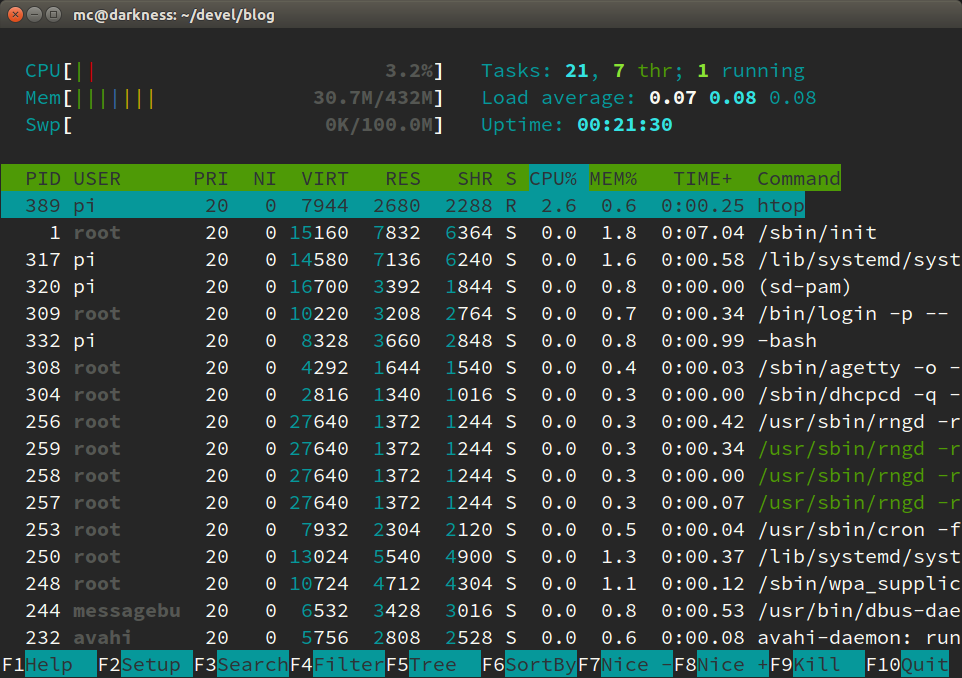
Last but not least, for fans of ancient minicom
if you want to connect via minicom
remember to disable “Hardware Control Flow” option
(they use RTS and CTS lines present on some converters that we do not use).